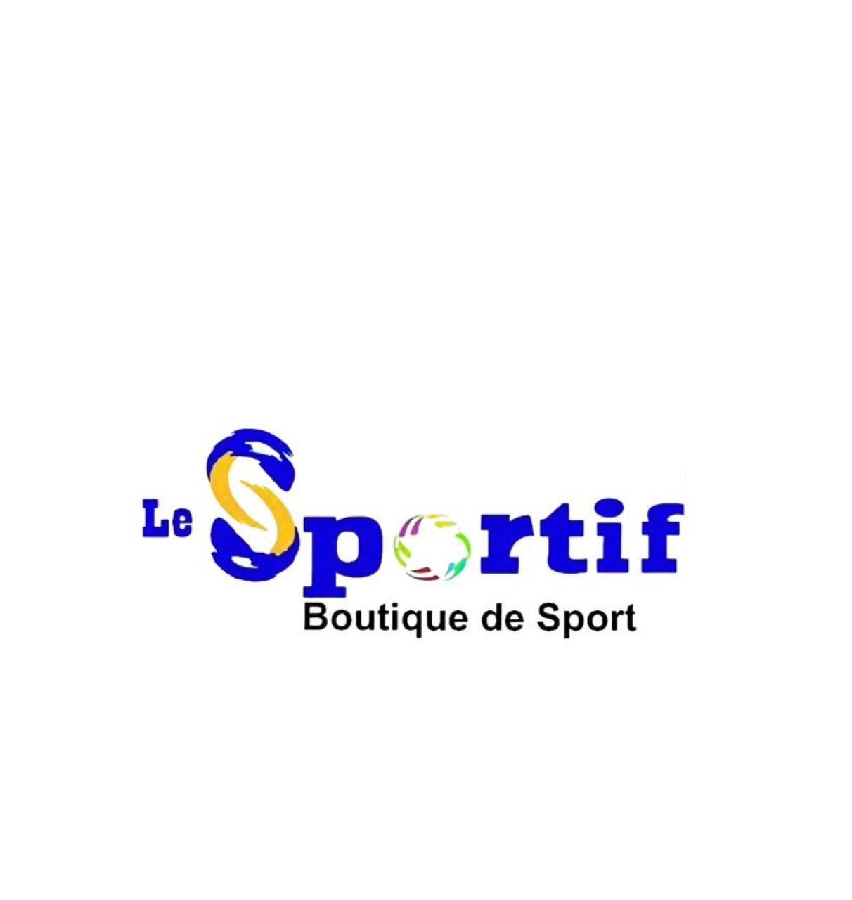
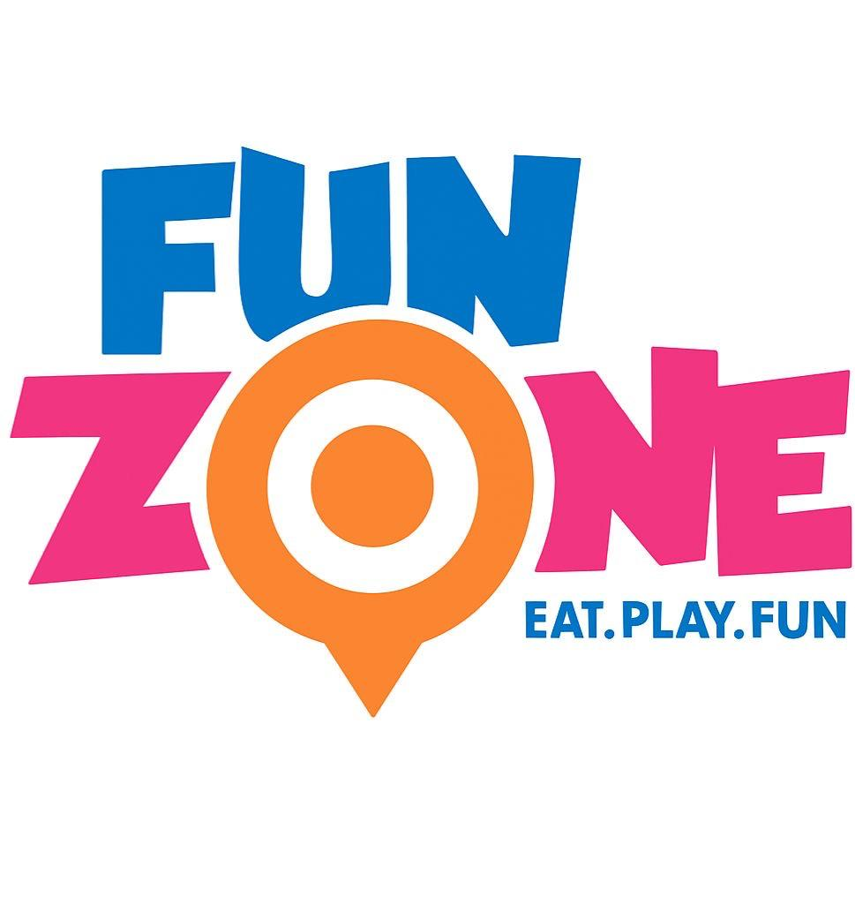
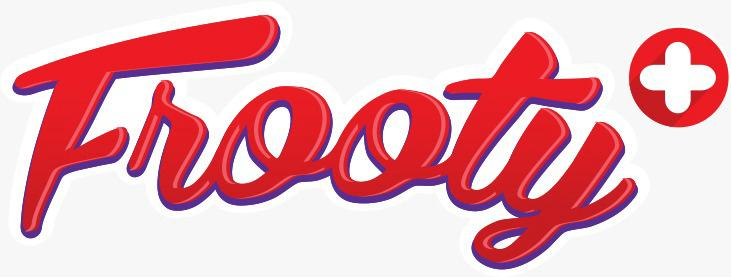

Solidarite
Nous croyons au pouvoir de l'entraide et du partage pour transformer des vies.
Youth Foundation Haiti agit pour les orphelins et les enfants en situation de vulnerabilite a travers l'education, l'alimentation, la protection, l'accompagnement psychosocial et des espaces d'epanouissement.
Mois en cours
Nos actions prioritaires de fevrier 2026 mobilisent volontaires, partenaires et communautes.

Qui nous sommes
La mission de Youth Foundation Haiti est d'ameliorer durablement les conditions de vie des enfants et des jeunes en situation de vulnerabilite, en particulier les orphelins et les enfants issus de milieux defavorises.
Notre vision est de construire une Haiti ou chaque enfant a acces a la dignite, a l'education et aux opportunites necessaires pour un avenir meilleur.
Nos valeurs
Nous travaillons avec une culture de responsabilite, de respect et de resultats mesurables.
Nous croyons au pouvoir de l'entraide et du partage pour transformer des vies.
Nous agissons avec responsabilite, transparence et determination sur le terrain.
Chaque enfant est accompagne avec amour, consideration et protection.
Nous travaillons sans discrimination pour offrir une chance egale a tous.
Nos actions et ressources sont gerees avec integrite et redevabilite.
Nous avancons avec les communautes, partenaires et volontaires engages.
Ce que nous faisons
Des programmes concrets, repetes chaque annee, pour soutenir l'education, le bien-etre et la protection des enfants.
Impact global
Youth Foundation Haiti accompagne chaque annee des milliers d'enfants a travers des actions educatives, alimentaires, sociales et culturelles dans plusieurs communautes d'Haiti.

Approche communautaire
Nos equipes interviennent directement dans les orphelinats et les communautes, avec une logique de transparence, de responsabilite sociale et de durabilite.
Recherche et rapports
Nous structurons nos actions autour de l'evidence terrain, de la gestion responsable et de la collaboration avec des partenaires locaux solides.
Recits et temps forts
Repere du moment: fevrier 2026. La fondation maintient un cycle annuel d'activites en faveur des enfants.
Lancement officiel de la fondation avec une vision communautaire de long terme.
Distribution de kits scolaires et appui a la scolarisation de centaines d'enfants.
Repas special, animations educatives et activites recreatives dans les orphelinats.
Celebrations de Noel, distribution de repas, jouets et cadeaux dans plusieurs structures.
Evenement de collecte de fonds et de mobilisation communautaire pour la protection de l'enfance.
Equipe et gouvernance
Youth Foundation Haiti repose sur des volontaires, coordinateurs et partenaires communautaires unis autour de la meme vision.
Jean Sebastien - Fondateur et Directeur General
"En tant qu'orphelin, j'ai connu la douleur, l'abandon et l'insecurite. Chaque enfant que nous soutenons represente une part de mon propre passe que je tente de reparer par l'action."
Alexa Jean - Coordinatrice des programmes sociaux
Rejointe en 2020, elle participe activement aux activites dans les orphelinats, a l'encadrement des enfants et a l'organisation logistique des projets.
Sponsors et partenaires
Nous invitons les entreprises, institutions et organisations a devenir partenaires d'un mouvement qui transforme la vie des enfants vulnerables en Haiti.



Volontaires et communaute
Suivez nos plateformes officielles pour recevoir les actualites, annonces et appels a volontaires.
Soutenir Youth Foundation Haiti
Votre contribution investit dans une generation capable de transformer Haiti.
Contact
Vous etes sponsor, partenaire, volontaire ou media? Ecrivez-nous. Notre equipe repond dans les plus brefs delais.